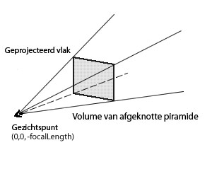

| Pakket | flash.geom |
| Klasse | public class PerspectiveProjection |
| Overerving | PerspectiveProjection |
| Taalversie: | ActionScript 3.0 |
| Runtimeversies: | Flash Player 10, AIR 1.5 |
Projectie is een manier om een driedimensionaal object in een tweedimensionale ruimte voor te stellen, bijvoorbeeld zoals een kubus op een computerscherm wordt weergegeven. Perspectiefprojectie gebruikt een afgeknotte weergavepiramide (een rechthoekige piramide) om een driedimensionale wereld en de objecten daarvan te modelleren en op het scherm te projecteren. De weergavepiramide wordt steeds breder naarmate deze verder is verwijderd van de oorsprong van het gezichtspunt. De oorsprong van het gezichtspunt kan een camera zijn of de ogen van de kijker die naar het scherm kijkt. Het geprojecteerde perspectief produceert de illusie van drie dimensies met diepte en afstand, waarbij de objecten dichterbij het scherm groter lijken te zijn dan de objecten die verder van het scherm zijn verwijderd.

Een standaard PerspectiveProjection-object is een raamwerk dat voor perspectieftransformatie van het basisobject is gedefinieerd, op basis van het weergaveveld en de verhoudingen (afmetingen) van het werkgebied. Het projectiemiddelpunt, het verdwijnende punt, is ingesteld op het middelpunt van het werkgebied. Dat betekent dat de driedimensionale weergaveobjecten in de richting van het middelpunt van het werkgebied verdwijnen naarmate ze zich langs de Z-as verplaatsen. Het standaardgezichtspunt bevindt zich op punt (0,0) en kijkt neer op de positieve Z-as. De Y-as wijst omlaag naar de onderkant van het scherm. U kunt toegang verkrijgen tot de perspectiefprojectie-instellingen van het weergaveobject root en u kunt de eigenschappen van het gezichtsveld en het projectiemiddelpunt van de eigenschap perspectiveProjection wijzigen middels de eigenschap DisplayObject.transform van het root-object.
Ook via de perspectiefprojectie van het bovenliggende element kunt een andere perspectiefprojectie-instelling voor een weergaveobject instellen. Eerst maakt u een PerspectiveProjection-object en stelt u de eigenschappen fieldOfView en projectionCenter daarvan in. Vervolgens kent u het PerspectiveProjection-object met de eigenschap DisplayObject.transform aan het bovenliggende weergaveobject toe. Daarna worden de opgegeven projectiematrix en transformatie toegepast op alle onderliggende driedimensionale elementen van het weergaveobject.
Verwante API-elementen
 Overerfde openbare eigenschappen verbergen
Overerfde openbare eigenschappen verbergen Overerfde openbare eigenschappen weergeven
Overerfde openbare eigenschappen weergeven| Eigenschap | Gedefinieerd door | ||
|---|---|---|---|
 | constructor : Object
Verwijzing naar het klasseobject of de constructorfunctie van een bepaalde objectinstantie. | Object | |
| fieldOfView : Number
Geeft een hoek op als een graad tussen 0 en 180, voor het gezichtsveld in drie dimensies. | PerspectiveProjection | ||
| focalLength : Number
De afstand tussen het oog van de oorsprong van het gezichtspunt (0,0,0) en het weergaveobject dat zich op de Z-as bevindt. | PerspectiveProjection | ||
| projectionCenter : Point
Een tweedimensionaal punt dat het middelpunt van de projectie voorstelt, het verdwijnende punt voor het weergaveobject. | PerspectiveProjection | ||
| Methode | Gedefinieerd door | ||
|---|---|---|---|
Maakt een instantie van een PerspectiveProjection-object. | PerspectiveProjection | ||
|
Geeft aan of voor een object een opgegeven eigenschap is gedefinieerd. | Object | |
|
Geeft aan of een instantie van de klasse Object zich in de prototypeketen van het object bevindt dat als parameter is opgegeven. | Object | |
|
Geeft aan of de opgegeven eigenschap bestaat en kan worden opgesomd. | Object | |
|
Stelt de beschikbaarheid van een dynamische eigenschap voor lusbewerkingen in. | Object | |
|
Geeft de tekenreeksweergave van dit object weer, geformatteerd volgens de locatiespecifieke conventies. | Object | |
Retourneert het onderliggende Matrix3D-object van het weergaveobject. | PerspectiveProjection | ||
|
Retourneert een tekenreeksrepresentatie van het opgegeven object. | Object | |
|
Retourneert de primitieve waarde van het opgegeven object. | Object | |
fieldOfView | eigenschap |
fieldOfView:Number| Taalversie: | ActionScript 3.0 |
| Runtimeversies: | Flash Player 10, AIR 1.5 |
Geeft een hoek op als een graad tussen 0 en 180, voor het gezichtsveld in drie dimensies. Deze waarde bepaalt hoe sterk de perspectieftransformatie en vervorming van toepassing zijn op een driedimensionaal weergaveobject met een Z-coördinaat die niet nul is.
Een graad dichtbij 0 betekent dat de tweedimensionale X- en Y-coördinaten van het scherm grofweg dezelfde zijn als de driedimensionale X-, Y- en Z-coördinaten met weinig of geen vervorming. Met andere woorden, voor een kleine hoek lijkt een weergaveobject dat zich langs de Z-as beweegt, ongeveer even groot te blijven en slechts weinig te bewegen.
Een waarde dichtbij 180 graden geeft een visoog-lenseffect: posities met een z-waarde die kleiner is dan 0 worden vergroot, terwijl posities met een z-waarde die groter is dan 0 worden verkleind. Met een grote hoek lijkt een weergaveobject dat zich langs de Z-as beweegt, snel van formaat te veranderen en een grote afstand af te leggen. Als het gezichtsveld is ingesteld op 0 of 180, is niets op het scherm te zien.
Implementatie
public function get fieldOfView():Number public function set fieldOfView(value:Number):voidfocalLength | eigenschap |
focalLength:Number| Taalversie: | ActionScript 3.0 |
| Runtimeversies: | Flash Player 10, AIR 1.5 |
De afstand tussen het oog van de oorsprong van het gezichtspunt (0,0,0) en het weergaveobject dat zich op de Z-as bevindt. Tijdens perspectieftransformatie wordt de focalLength dynamisch berekend met behulp van de hoek van het gezichtsveld en de verhoudingen van het werkgebied (breedte van werkgebied gedeeld door hoogte van werkgebied).
Implementatie
public function get focalLength():Number public function set focalLength(value:Number):voidVerwante API-elementen
projectionCenter | eigenschap |
projectionCenter:Point| Taalversie: | ActionScript 3.0 |
| Runtimeversies: | Flash Player 10, AIR 1.5 |
Een tweedimensionaal punt dat het middelpunt van de projectie voorstelt, het verdwijnende punt voor het weergaveobject.
De eigenschap projectionCenter is een verschuiving ten opzichte van het standaardregistratiepunt dat de linkerbovenhoek is van het werkgebied, punt (0,0). Het standaardmiddelpunt van de projectietransformatie bevindt zich in het midden van het werkgebied. Dat betekent dat driedimensionale weergaveobjecten in de richting van het middelpunt van het werkgebied verdwijnen wanneer ze achterwaarts langs de Z-as worden verplaatst.
Implementatie
public function get projectionCenter():Point public function set projectionCenter(value:Point):voidPerspectiveProjection | () | Constructor |
public function PerspectiveProjection()| Taalversie: | ActionScript 3.0 |
| Runtimeversies: | Flash Player 10, AIR 1.5 |
Maakt een instantie van een PerspectiveProjection-object.
toMatrix3D | () | methode |
public function toMatrix3D():Matrix3D| Taalversie: | ActionScript 3.0 |
| Runtimeversies: | Flash Player 10, AIR 1.5 |
Retourneert het onderliggende Matrix3D-object van het weergaveobject.
Een weergaveobject, net als het basisobject, kan een PerspectiveProjection-object hebben zonder dat voor de transformaties ervan een eigenschap Matrix3D is gedefinieerd. Eigenlijk gebruikt u een PerspectiveProjection- of een Matrix3D-object om de perspectieftransformatie op te geven. Als bij het gebruik van het PerspectiveProjection-object een Matrix3D-object nodig was, kunt u met de methode toMatrix3D() het onderliggende Matrix3D-object van het weergaveobject ophalen. De methode toMatrix3D() kan bijvoorbeeld worden gebruikt met de methode Utils3D.projectVectors().
Matrix3D — Het onderliggende Matrix3D-object.
|
Verwante API-elementen
Wed Jun 13 2018, 11:42 AM Z